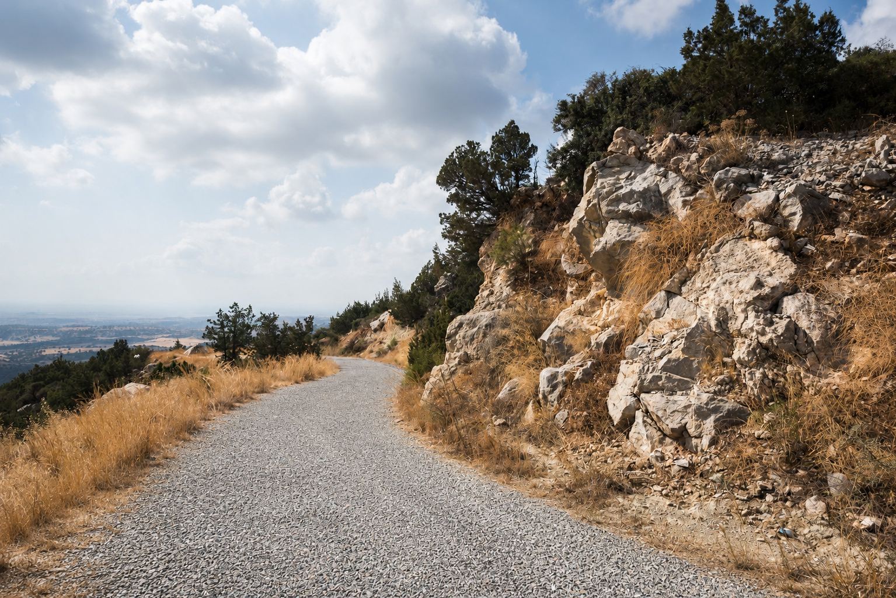

doğayolculukvahşi yaşam
Dipkarpaz Köyü, Yaban Eşekleri ve Manastır
Kıbrıs'ın bozulmamış doğu vahşi doğasının derinliklerine doğru sürün. Yaban eşekleri, boş sahil şeritleri ve tarihi Apostolos Andreas yerleşkesi ile karşılaşın.